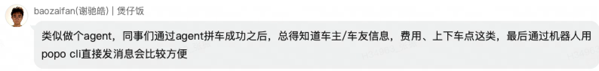

通过新增 Skill 让 Agent 学会"用机器人身份发消息"，本期只做发消息，不做创建、不做回调，让用户最快用起来。
POPO CLI 当前只能用用户本人的身份发消息。这带来三个核心问题：

本期不在本地绑定机器人——为了发消息这一个动作让用户去扫码创建 / 绑定机器人对用户来说太重。改为：在安装 CLI 时附带一个新 Skill，由它教会 Agent "如何用机器人身份发消息"——用户在指令里直接说出机器人名称，Agent 自动完成"搜索机器人 → 校验权限 → 调用开放平台发消息"。
用户对 Agent 说："让 [运维助手] 在 XX 群里发条消息：今晚 22:00 维护，预计 30 分钟。" Agent 用运维助手机器人身份发出，群成员一眼看出"这是机器人发的官方通知"，不会误以为是用户本人发言。
长任务（部署、跑数据、生成报告）完成后，Agent 通过用户指定的机器人推送一条"任务已完成 + 结果链接"给指定的人或群。
用户已有多个机器人（如"代码助手"、"日报助手"、"运维助手"），不同 Agent 在不同任务里使用不同机器人发消息，消息来源一目了然，不会串台。
某些通知不适合用个人身份发（避免对方误认为是私人请求），但又希望对方收到。借机器人身份发出，更显正式。
本期交付一个能力：在安装 CLI 时携带一个新的 Skill，让 Agent 知道"如何用机器人身份发消息"。完整运行链路如下：
| 阶段 | 动作 |
|---|---|
| ① 用户指令 | 用户对 Agent 说："让 [机器人名称] 给 XX 发消息：YYY"，必须明确机器人名称。 |
| ② 搜索机器人 | Skill 引导 Agent 按"机器人名称"搜索，找到目标机器人。 |
| ③ 权限校验 | 双重判定：a) 当前用户是该机器人的开发者或管理员；b) 接收人在该机器人可使用范围内。 |
| ④ 调接口发送 | 校验通过 → 用机器人身份调用 POPO 开放平台发消息接口，消息以机器人身份送达接收方。 |
| 项 | 说明 |
|---|---|
| 必须指定机器人名称 | 用户指令必须明确说明用哪个机器人发送（如"用 [运维助手] 发"）。Agent 不主动猜测、不默认选机器人。 |
| 消息内容能力 | 支持文本、图片、文件三类内容，与当前 CLI 已支持的发消息能力保持一致。 |
| 发送方显示 | 消息送达时，发送方显示为机器人名称 + 头像，不显示用户本人身份。 |
| 一次成行 | Skill 内部把"搜机器人 → 校权限 → 发消息"封装为顺序动作，避免 Agent 来回试错、多次工具调用。 |
本 PRD 与之前「IM Skill 支持给机器人发消息」的需求是互补关系，方向相反，合在一起构成"AI ↔ 机器人 ↔ 人"的完整发送闭环：
| 维度 | IM Skill 给机器人发消息 | 本 PRD（机器人发消息） |
|---|---|---|
| 谁是消息发送方 | 用户本人 | 机器人（Agent 借机器人身份） |
| 谁是消息接收方 | 机器人 | 普通用户 / 群 |
| 典型用法 | "让 KM 小助手帮我搜一下 X" | "让 [代码助手] 在群里通知 X" |
| # | 验收项 | 判定标准 |
|---|---|---|
| V1 | Skill 随 CLI 安装下发 | 用户安装 CLI 后，无需任何手动操作即可在 Agent 中使用"用机器人发消息"能力。 |
| V2 | 按名称定位机器人 | 用户指令包含机器人名称时，Skill 能引导 Agent 准确找到该机器人；同名机器人或找不到时给出明确提示。 |
| V3 | 权限双重校验 | 用户无操作权限 / 接收方不在可使用范围时，立即终止并向用户明确说明原因，不发送消息。 |
| V4 | 消息成功发送 | 校验通过后，消息以机器人身份（机器人名称 + 头像）送达接收方；支持文本 / 图片 / 文件三种内容。 |
| V5 | 一次调用完成 | Skill 内部把"搜索 + 校验 + 发送"作为一次顺序动作完成，Agent 不需要在中间多次试错。 |
| V6 | 用户零配置 | 用户除"在 POPO 客户端已有可用机器人"外，无需任何额外配置（无扫码、无本地绑定、无 webhook）。 |
| # | 事件 | 关键参数 / 说明 |
|---|---|---|
| E1 | 机器人发消息 | 走 Fabric 后台接口调用埋点链路，支持统计机器人发消息接口调用次数。 |